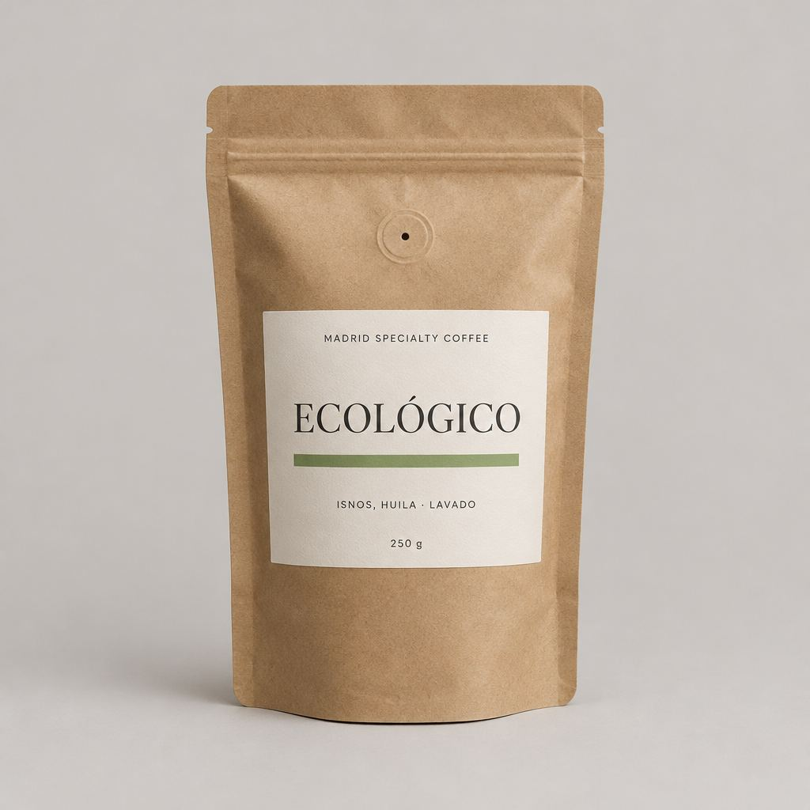

Colombia · Aipecito
Colombia Huila
Chocolate, avellana y caña de azúcar, con un final cítrico que limpia el paladar. Equilibrado en cualquier método.
- Chocolate
- Avellana
- Caña de azúcar
- Final cítrico
11,90 € / 250 g
Inicio / Tienda / Ecológico Isnos

Colombia · Isnos, Huila
Nuestro café más brillante.
Caramelo, fresa y mandarina, con acidez viva y cuerpo ligero. Con certificación ecológica.
13,90 €250 g · IVA incluido
Pago seguro con tarjeta. Envío gratis desde 35 €.
Para comprar necesitas JavaScript. También puedes pedir por WhatsApp.
En la taza
Caramelo, fresa y mandarina. Los colores encendidos de la rueda son las familias de sabor de este café.
Perfil orientativo, a partir de las notas de cata del lote.
Del origen a tu taza
Cultivado a 1.880 metros cerca de Isnos, en Huila, con Caturra, Colombia y Geisha. Certificación ecológica y proceso lavado para una taza limpia y floral.
Imagen ilustrativa generada con IA.Prepáralo así
Elige tu método y el número de tazas. Te damos las cantidades.
Recomendado para este café.
Molienda media-fina. Una bolsa de 250 g da para unas 16 tazas.
Abrir en la calculadoraTambién funciona.
También funciona.
Molienda media-fina. Una bolsa de 250 g da para unas 16 tazas.
Abrir en la calculadoraTambién funciona.
Molienda gruesa. Una bolsa de 250 g da para unas 16 tazas.
Abrir en la calculadoraTambién funciona.
Si te gusta este
Colombia · Aipecito
Chocolate, avellana y caña de azúcar, con un final cítrico que limpia el paladar. Equilibrado en cualquier método.
India · Mudigere
Banana madura, uva y macadamia, con un toque de pomelo y final a nuez. Cultivado bajo sombra.
Guatemala · Huehuetenango
Almendra, cacao y manzana roja, con acidez suave y cuerpo equilibrado. Un café que gusta a todos.
En grano se conserva fresco más tiempo. Si no tienes molinillo, elige la molienda de tu método: la preparamos para ti.
Cierra bien la bolsa con su zip y guárdala lejos de la luz y el calor. Más consejos en nuestras guías.
Tostamos por lotes. Pregúntanos por la fecha de tueste del lote actual al hacer tu pedido.
Añádelo al carrito y pulsa «Pedir por WhatsApp». Te confirmamos disponibilidad, envío y pago.
Las imágenes son ilustrativas. El envase real puede variar. Consulta las condiciones de compra.